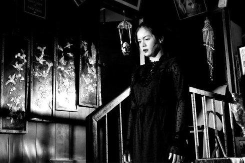

{kind=link}
The Halt
Ang Hupa

Lav Diaz
Tuesday | 15 oct 6.30 pm | Werkstattkino
”If maybe the film is material for science fiction and horror, the codes of Lav Diaz’ cinema remain the same, that is to say, the dispositives of a film with long shots, of fixed cameras and dialogues in almost ghostly situations. Stopped times in situations of characters who seem to wonder, a contrasted black and white to draw this permanent state of oppression, and a soundtrack of noise music and heavy metal as catharsis.” (Desistfilm)
Lav Diaz born 1958 in Cotabo / Philippines. Lives and works in the Philippines. In the early 90s Diaz went to the USA and worked there as a journalist. At the same time he began working as a screenwriter and shooting his first opus magnum BATANG WEST SIDE. Diaz is one of the most internationally successful Filipino independent directors. His films about the Philippine soul have won numerous awards at major A-festivals. UNDERDOX has been showing his overlong films, which belong to the "Slow Cinema", since the first year.
|
| Films Batang West Side 2002 | Evolution of a Filipino Family 2004 (1. UX) | Heremias 2006 | Melancholia 2008 | Butterflies Have No Memories 2009 (5. UX) | Norte, The End of the History 2013 (8. UX) | From What is Before 2014 (9. UX) | A Lullaby to the Sorrowful Mystery 2016 (11. UX) The Woman Who Left 2016 (12. UX) Season of the Devil 2018 (13. UX) The Halt 2019
|